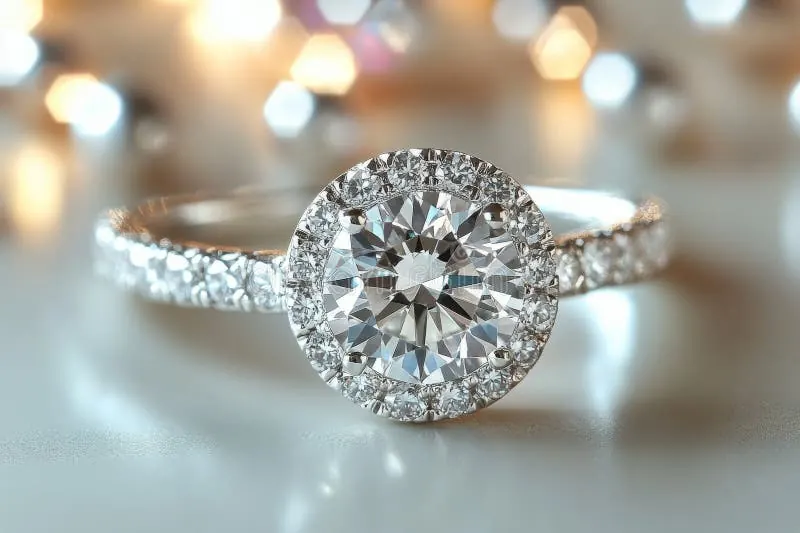

鑽石螢光：加價還是砍價的秘密
螢光鑽石在紫外燈下會變藍，但這道藍光在市場上既是加價話術，也是砍價藉口——真相藏在光學裡。

核心定義
螢光（fluorescence）是鑽石在紫外光照射下發出可見光的現象。最常見的螢光顏色是藍色，另外還有黃、綠、橙、白等少見色。GIA 把它分為五級：無（None）、微弱（Faint）、中等（Medium）、強（Strong）、極強（Very Strong）。
藍色螢光的來源是鑽石晶格中的微量氮原子聚集體：它們吸收紫外線後，以藍光形式放出能量。所以螢光不是外來塗料，而是鑽石本身的「體質」——約三成的天然鑽石帶有某種程度的螢光。
特徵與分類
| 螢光等級 | 紫外燈表現 | 市場觀感 |
|---|---|---|
| None | 不發光 | 中立 |
| Faint | 極微弱藍光 | 多數人無感 |
| Medium | 清晰藍光 | 行情中性 |
| Strong | 明顯藍光 | 常被議價，但有爭議 |
| Very Strong | 強烈藍光 | 少數案例反而加分 |
歷史上有「藍白鑽」的傳說：認為螢光讓鑽石看起來更白、更亮，因而有加價敘事。這個說法部分成立——在極少數情況下，強藍螢光可以抵銷輕微的黃色調，讓鑽石看起來更白；但在大部分情況下，強螢光會讓高色階鑽石（D～F）出現「油霧感」（oily/hazy），反而降低透明度表現。
科學原理
螢光的物理機制是「斯托克斯位移」：鑽石吸收能量較高的紫外光子，電子躍遷後回落，放出能量較低的可見光。氮是關鍵——不同氮聚集形式產生不同螢光色，藍色螢光與 N3 缺陷（三個氮原子圍繞一個空位）高度相關。
研究統計上，強螢光鑽石中約 0.2%～2% 會出現霧狀外觀（由密集的螢光缺陷散射光線造成），這正是「螢光影響透明度」的科學基礎——但注意，多數強螢光鑽石依然晶瑩剔透。
鑑定與鑑別方法
- 在長波紫外燈（365nm 為主）下觀察螢光顏色與強度
- 對照 GIA 證書的 Fluorescence 欄位
- 區分「體色」與「螢光」：螢光是紫外燈下的發光，不是日常光下的顏色
- 強螢光鑽石要檢查是否「油霧」：白紙上翻轉觀察是否白濛濛
- 注意莫桑石也有螢光（常為黃綠），別搞混
市場行情與保養建議
市場定價上，強螢光對 D～F 高色階鑽石通常是扣分項（油霧風險、轉手時被議價），對 I 色以下低色階鑽石則可能「加分」（藍螢光抵黃）。實務上，多數消費者買螢光鑽石是為了它的「藍色小驚喜」與較低價格。
投資收藏建議：螢光是中性特徵，重點是它有沒有造成油霧。證書上 Medium 以下的螢光一般無需過度在意；Strong 以上，務必親眼看實物確認透明度。
常見誤區
這是近年被過度放大的恐懼。統計顯示只有極少數強螢光鑽石有可見的油霧；Faint～Medium 螢光對品質幾乎無影響，甚至能讓低色階鑽石顯得更白。避開螢光，等於錯過一大票性價比高的好鑽。
「藍白鑽」是古董市場的浪漫敘事，現代市場並不全然買單。對 D～F 高色階，強螢光常是議價點；只有對特定低色階鑽石才可能加分。傳說歸傳說，行情看實際表現。
冷知識
GIA 統計顯示約 25%～35% 的天然鑽石有某種程度的螢光，藍色佔絕大多數。也就是說，螢光鑽石一點也不稀有——它是鑽石家族的常態。
日常光下鑽石的白是白光反射，紫外燈下的藍是螢光發射。兩者是不同機制——這也解釋了為什麼很多人第一次在紫外燈下看到鑽石「變藍」時大吃一驚。
反直覺觀點
一顆 I 色帶強藍螢光的鑽石，紫外光下藍光可能讓它「看起來更白」，市場上有人專門找這種「藍白」組合。同樣特徵，在高色階是扣分、在低色階是加分——同一個特徵，身價兩極。
多數強螢光鑽石日常光下完全正常，只有極少數出現油霧。與其被證書字母嚇退，不如要求店家在自然光下實測——你的眼睛比證書更懂你。